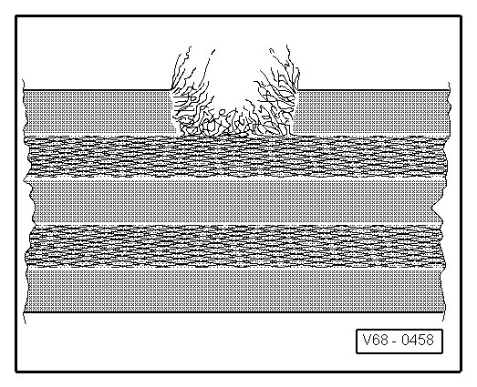
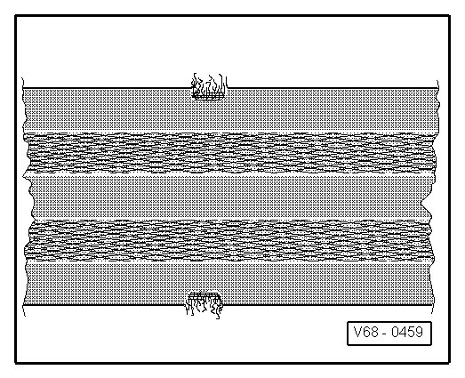
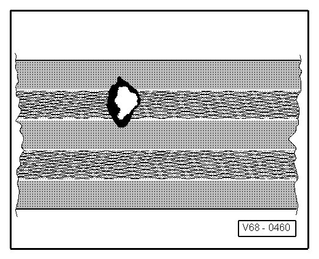
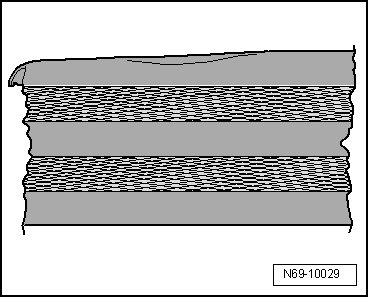

Belt Webbing, Checking
Belt Webbing, Checking
- Pull belt completely out of retractor or lap belt adjustment tongue.
- Inspect belt straps for soiling and, if necessary, wash with mild soap solution.
• If a vehicle has been involved in an accident and any of the following damage exists (belt cut, torn or chafed) or (fabric loops at the belt edge torn), replace complete seat belt with buckle.
• If a vehicle has not been involved in an accident and exhibits damage as described below, it is sufficient to replace only the damaged seat belt.
Possible damages
Belt webbing cut, torn or chafed.

Webbing loops on belt edge torn.

Burn marks from cigarettes or similar.

Belt edge deformed on one side and/or belt edge area is wavy.
